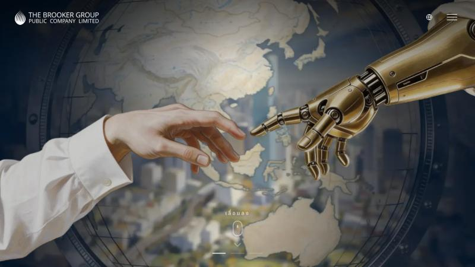
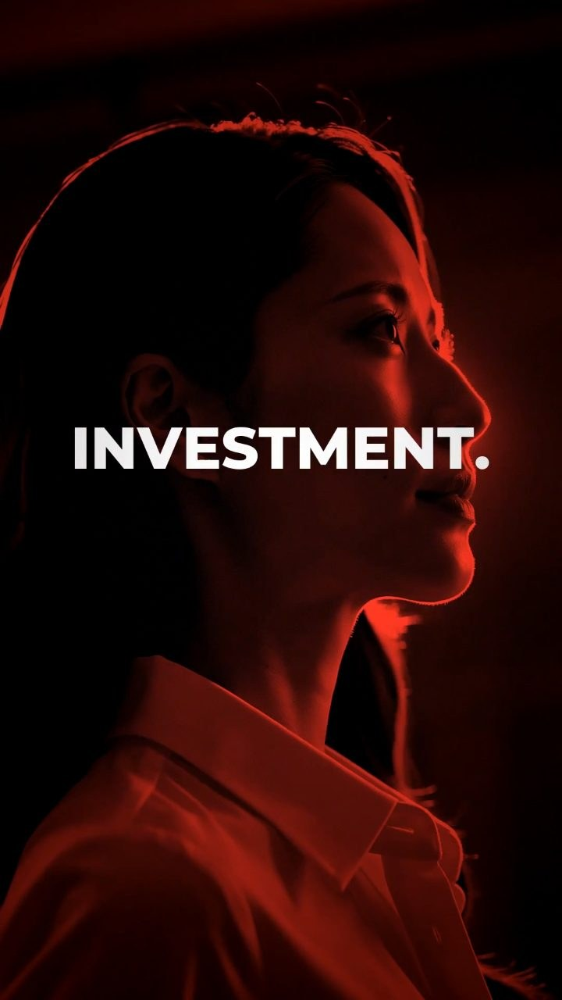
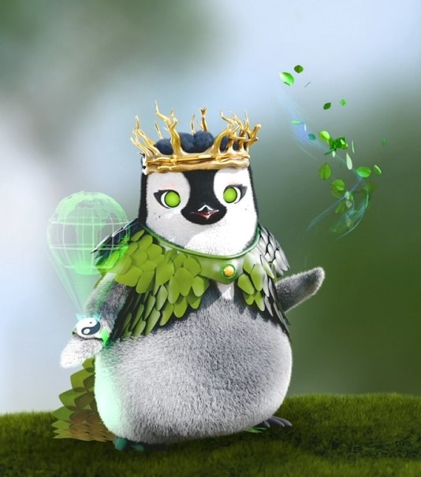
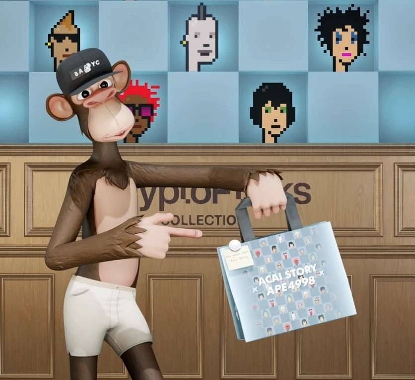
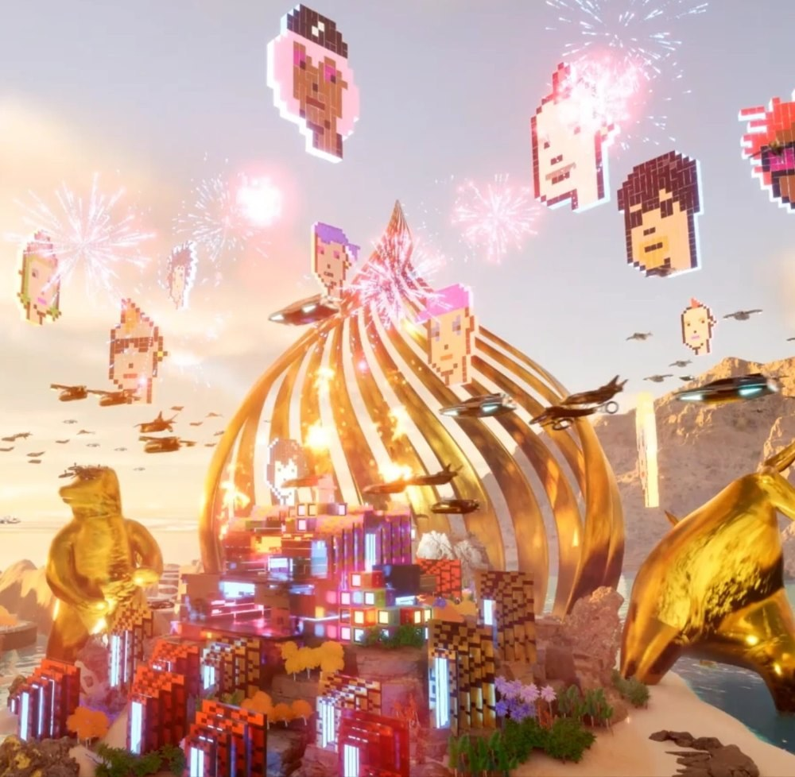

The Brooker Group Public Company Limited
Senior 3D Animator · Digital Assetมิ.ย. 2565 – ต.ค. 2569
- สร้างงาน 3D Animation และผลงานดิจิทัลตามโจทย์
- ร่วมทำเว็บไซต์องค์กร brookergroup.com ด้วยวิชวล AI
Nattawoot Kwangkhoontod
3D Artist · AI Creative · Game Creator
คนทำงานสร้างสรรค์ที่มีประสบการณ์ทำงานรวม 11 ปี พื้นฐานสายช่างอิเล็กทรอนิกส์และอุปกรณ์การแพทย์ทำให้คิดเป็นระบบ ส่วนปริญญาโทด้านบริหารธุรกิจทำให้มองงานเป็นภาพรวม ปัจจุบันเชี่ยวชาญการปั้นตัวละคร 3D และการกำกับหนังสั้นด้วย AI โดยนำสายตาจากงาน 3D มาใช้กับงาน AI ทุกชิ้น
Senior 3D Animator · Digital Assetมิ.ย. 2565 – ต.ค. 2569
Career Transitionเม.ย. 2563 – มิ.ย. 2565
Senior Staff · แผนก Pressมี.ค. 2557 – มี.ค. 2563
Supportก.ค. 2556 – ก.พ. 2557
เล่นเกม Resident Evil 0–9, Naraka: Bladepoint, Diablo 2, Street Fighter และ Ragnarok ปั้นโมเดล 3D และลองเครื่องมือ AI ใหม่ๆ โดยตัว Natto ทั้ง 2D, 3D และตัวที่เต้นได้ก็มาจากงานอดิเรกนี้
ดูคลิปและผลงานทั้งหมดได้ที่ nattawoot-kw.github.io

Web · AI Visualร่วมทำเว็บไซต์องค์กรด้วยวิชวลที่สร้างจาก AI ดูได้ที่ brookergroup.com/th

AI Social · Brand และ Explainerคลิปแบรนด์และคลิปโซเชียล ตั้งแต่งาน Trendy ไปจนถึงคลิปอธิบายเทคโนโลยี

Story & Charactersจักรวาลเพนกวินที่เล่าเรื่องการลดคาร์บอน มีหนังตัวอย่าง เรื่องราวแนวตั้งอธิบาย smart contract และตัวละครหลายบทบาท

AR · 3D Character, Camera Trackingพา Bored Ape #4998 ออกมาใช้ชีวิตในโลกจริง เดินงาน ApeFest และร่วมงานกับร้าน Açaí
ออกแบบเกาะ ล็อบบี้ และฉากตัวละครเต้นพร้อมกัน เช่น Proxie, Bull and Bear และ Brook Lobby

Unreal Engine 5พา CryptoPunk จากภาพพิกเซล 24×24 มาเป็นตัวละคร 3D พร้อมงานป้ายบิลบอร์ด 3D